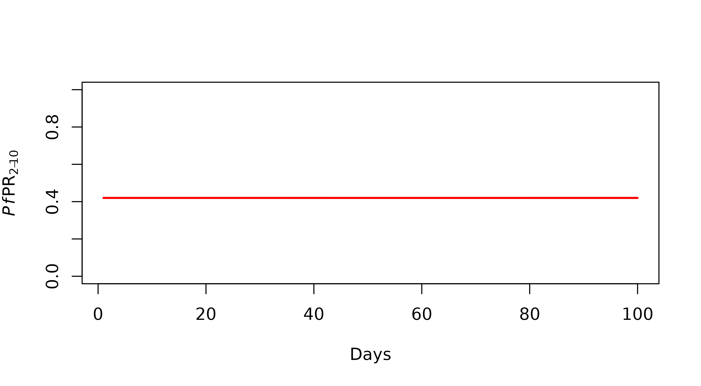
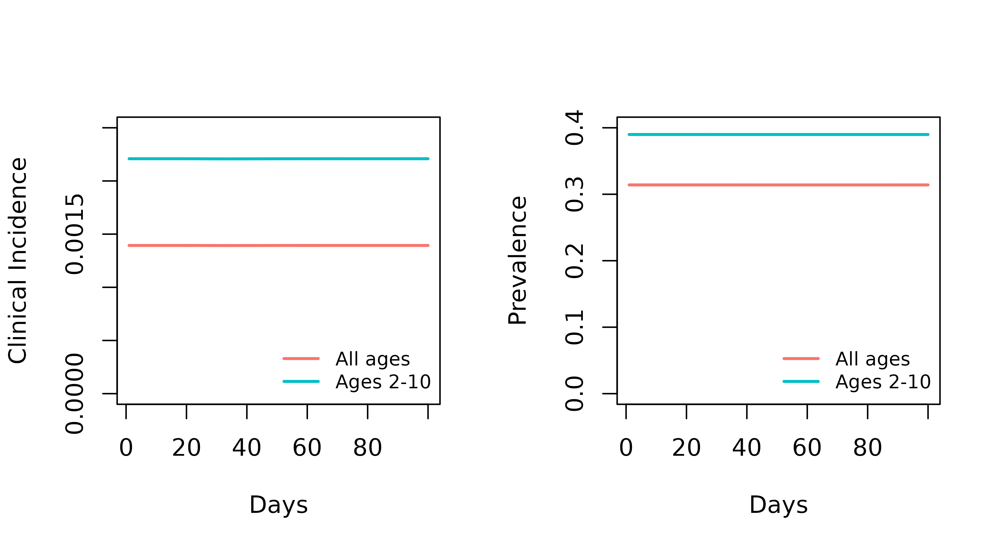

Basic_Model_Run.RmdWe can get started with the simplest model run with almost entirely default model parameters. The only parameter that malariasimple requires you to define in the initial EIR (init_EIR)
library(malariasimple)
#Define default parameters
params <- get_parameters() |>
set_equilibrium(init_EIR = 10)
#Run model
out <- run_simulation(params) |> as.data.frame()
#Plot PfPR[2-10]
plot(x = out$time, y = out$n_detect_730_3650/out$n_730_3650,
type = "l", col = "red", lwd = 2,
xlab = "Days", ylab = expression(paste(italic(Pf),"PR"[2-10])),
ylim = c(0,1))
Simulating a a model in malariasimple is a two-step process:
first define parameters, then run the model. You can define all core
parameters using the helper function get_parameters(). For
a detailed description of the parameters and their default values, refer
to the documentation by running ?get_parameters.
The other key function in preparing parameters is
set_equilbrium(). This calculates equilibrium parameters at
the specified initial EIR. This function also provides some ‘finishing
touches’ to the parameter list in order to satisfy the model. It is
therefore essential that set_equilbrium() is called at the
end of the parameter preparing process.
custom_params <- get_parameters(n_days = 200, #Length of simulation
ft = 0.3, #Proportion treated
eta = 1/(30*365)) |> #Human population birth/death rate
set_equilibrium(init_EIR = 10)
custom_out <- run_simulation(custom_params)From get_parameters(), we can define which age groups we
want the model to output regarding clinical incidence and prevalence. It
is essential that these align with the age compartments defined in
age_vector (for default values, see ?get_parameters). All ages must be
provided in days. To align with malariasimulation,
prevalence is inferred from the proportion of detected infections
(n_detect_) and the population proportion within that age group (n_)
In the following examples we will request prevalence and clinical incidence for two age groups:
#Define age categories
age_vector <- c(0,1,2,5,10,20,40,60,100)*365
min_age_render <- c(2,0)*365
max_age_render <- c(10,Inf)*365
## Set up model parameters
params_ages <- get_parameters(n_days = 100,
age_vector = age_vector,
clin_inc_rendering_min_ages = min_age_render,
clin_inc_rendering_max_ages = max_age_render,
prevalence_rendering_min_ages = min_age_render,
prevalence_rendering_max_ages = max_age_render) |>
set_equilibrium(init_EIR = 10)
## Run model
out_ages <- run_simulation(params_ages) |> as.data.frame()
## Plot
par(mfrow = c(1,2))
plot(x = out_ages$time, y = out_ages$n_clin_inc_0_Inf / out_ages$n_0_Inf,
type = "l", col = "#F8766D", ylim = c(0,0.0025),lwd = 2,
xlab = "Days", ylab = "Clinical Incidence")
lines(out_ages$time, out_ages$n_clin_inc_730_3650 / out_ages$n_730_3650,
col = "#00BFC4",lwd=2)
legend("bottomright", legend = c("All ages", "Ages 2-10"),
col = c("#F8766D", "#00BFC4"), lty = 1,
bty = "n", ncol = 1, cex = 0.8, lwd=2)
plot(out_ages$time, out_ages$n_detect_0_Inf / out_ages$n_0_Inf,
type = "l", col = "#F8766D", ylim = c(0,0.4), lwd=2,
xlab = "Days", ylab = "Prevalence")
lines(out_ages$time, out_ages$n_detect_730_3650 / out_ages$n_730_3650,
col = "#00BFC4",lwd=2)
legend("bottomright", legend = c("All ages", "Ages 2-10"),
col = c("#F8766D", "#00BFC4"), lty = 1,
bty = "n", ncol = 1, cex = 0.8, lwd=2)
Seasonality can be included in the model using the
set_seasonality() function. The main argument is the
coefficients of a Fourier function (FF) describing the relative carrying
capacity of the vector population over time. In this example, we will
use default parameters for Thies, Senegal using the ICDMM
package. FF coefficients can also be input manually.
##------------------ Define seasonal parameters --------------------
# admin2 <- "Thies" #Define admin2 region
#
# #Import dataframe of FF coefficients for all regions within the ICDMM database
# ff_df <- ICDMM::load_file("admin_units_seasonal.rds")
#
# #Find row defining Thies
# admin_row_index <- ICDMM::admin_match(admin_unit = admin2, admin_units_seasonal = ff_df)
# admin_row <- ff_df[admin_row_index,]
#
# #Put into format required by malariasimple
# ff_coeffs <- list(g0 = admin_row["a0"],
# g = admin_row[c("a1","a2","a3")],
# h = admin_row[c("b1","b2","b3")],
# theta_c = admin_row["theta_c"])
ff_coeffs <- list(
g0 = 0.28,
g = c(-0.3, -0.03, 0.17),
h = c(-0.35, 0.33, -0.08),
theta_c = 0.28
)
#Floor argument defines minimal value of relative carrying capacity
seasonal_params <- get_parameters(n_days = 365,
age_vector = c(0, 1, 3, 5, 10, 20, 40, 60)*365) |>
set_seasonality(ff_coeffs, floor = 0.002) |>
set_equilibrium(init_EIR = 10)
##------------------- Run simulation and plot ---------------------
seasonal_output <- run_simulation(seasonal_params) |> as.data.frame()
par(mfrow = c(1,1))
plot(seasonal_output$time, seasonal_output$mv, lwd = 2,
type = "l", xlab = "Days", "ylab" = "Mosquito Population")We can also view the relative carrying capacity (known in the model
as ‘theta2’) directly using the get_seasonal_forcing()
function
theta2 <- get_seasonal_forcing(ff_coeffs, n_days = 365)
plot(theta2, lwd = 2, type = "l",
xlab = "Days", ylab = "theta2")